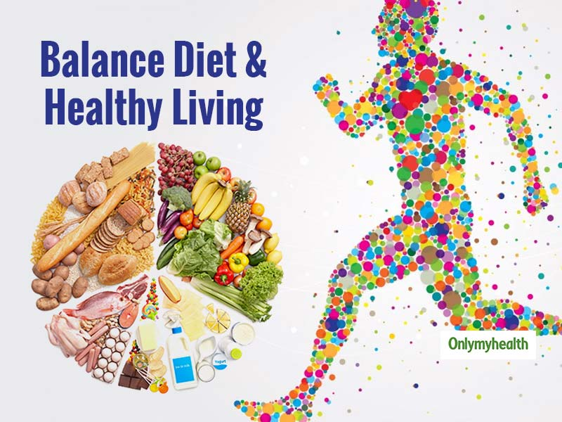

Introduction to Farming
Welcome to the world of farming—a symphony of soil, sun, and sweat that sustains us all. From humble seeds to bountiful harvests, farming is the art of coaxing life from the land. Join us in celebrating the hands that cultivate, the earth that nurtures, and the crops that feed. Whether you have a green thumb or are just starting to dig in, let's explore the roots of our sustenance and the journey from farm to table. Welcome to the heart of growth, where every furrow tells a story and every harvest is a testament to the dance between farmer and field.
Importance of Food in Human life
Food isn't just fuel; it's the very essence of life. Beyond satisfying hunger, the importance of food in human life is profound and multifaceted.

- Nutrition and Health: Food provides the essential nutrients our bodies need to function. From proteins and carbohydrates to vitamins and minerals, a balanced diet is crucial for maintaining good health and preventing nutritional deficiencies.
- Energy Source: Food is the primary source of energy for our bodies. The calories derived from food fuel our daily activities, from the most basic bodily functions to high-intensity physical and mental activities.
- Cultural Identity: Food is a powerful expression of culture. Traditional dishes and culinary practices are woven into the fabric of societies, connecting people to their roots and preserving cultural heritage.
- Social Bonding: Sharing a meal is a universal human experience. It fosters social connections, strengthens relationships, and provides a platform for communication and bonding. Celebrations, gatherings, and rituals often revolve around shared meals.
- Emotional Well-being: Food is closely tied to emotions and comfort. Certain foods can evoke memories, bring joy, and provide a sense of comfort. The act of cooking and sharing meals can be therapeutic and contribute to emotional well-being.
- Economic Impact: Agriculture and the food industry play a crucial role in economies worldwide. Food production, distribution, and sales contribute significantly to employment, trade, and economic development.
- Environmental Sustainability: Our choices regarding food production and consumption have a direct impact on the environment. Sustainable and responsible food practices are essential for preserving ecosystems, biodiversity, and the overall health of our planet.
- Educational Tool: Understanding the importance of different food groups and making informed dietary choices is a key aspect of education. Teaching nutritional awareness from a young age promotes lifelong health.
- Crisis Response: During times of crisis, such as natural disasters or humanitarian emergencies, access to nutritious food becomes a critical factor for survival and recovery.